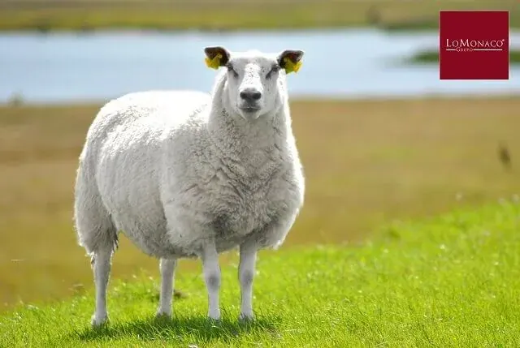

La Lana Merina

Pero el ser humano no sólo se sirve de la flora para dormir confortablemente, la naturaleza también le brinda la oportunidad de disfrutar de materiales de origen animal, así desde tiempos inmemorables, por ejemplo la lana, ha sido una aislante térmico perfecto. En concreto la lana merina es la más apreciada y no son pocas las razones, a saber:
- Cada hilo de lana, está compuesto por miles de filamentos suaves y elásticos que hacen que el resultado final sea mullido, cálido y esponjoso.
- Higroscopicidad y aislamiento térmico: la lana merina tiene la capacidad de absorber la humedad que el cuerpo desprende, sin humedecerse. Además dificulta el intercambio térmico, creándose un microclima ideal y equilibrado cuando es utilizada como prenda de abrigo.
- Poder antibactericida: Está recubierta por una grasa llamada lanolina, con la propiedad de evitar la proliferación de bacterias en sus fibras. Además esta misma sustancia mantiene la prenda de lana libre de manchas.
Conscientes de los innumerables beneficios y persiguiendo siempre el objetivo de proporcionar el mejor descanso para nuestros clientes, Grupo Lo Monaco incluye en su catálogo de productos el Cubre Colchón de Lana Merina, el Cubre Almohada de Lana Merina y la Gama de Mantas de Lana Merina, confeccionadas con pura lana virgen obtenida única y directamente de la oveja, sin mezcla alguna. Además de las propiedades ya de por sí dadas al material, la gama de lana de merina de Grupo Lo Monaco, está certificada por The Wooldmark Company, ofreciendo un resultado final inmejorable.